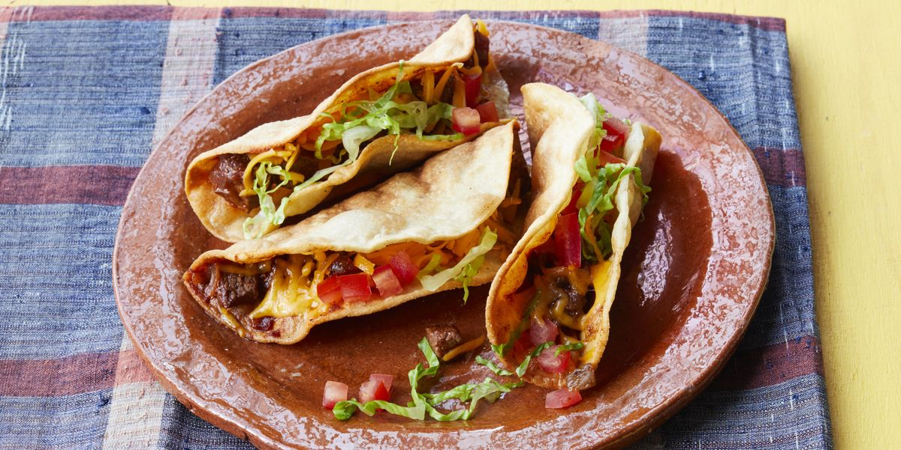

Fried Beef Tacos

Description
These crispy fried beef tacos—sometimes called "Arizona Tacos"— are having a moment on TikTok. You press the raw meat onto the tortilla before frying the whole thing for the ultimate crunchy exterior with a tender, juicy filling. And they're easy to make—here's how.
- 8 (5-inch) corn tortillas
- 1 pound ground sirloin
- 1/4 cup chopped fresh cilantro
- 2 tablespoons taco seasoning
steps
- Lay 8 tortillas flat on a surface.
- Combine beef, taco seasoning, and 1/2 teaspoon salt in a medium bowl.
- Press 1/4 cup of beef mixture onto half of each tortilla.
- Heat 1/4-inch of oil in a high-sided skillet over medium heat until shimmering. Working in batches, carefully add one taco at a time, flat, to the hot oil.
- Cook, turning once, until shell is golden brown and beef is no longer pink in the center, 30 seconds to 1 minute per side.. An instant-read thermometer inserted into the center should read at least 160 degrees F (70 degrees C).
- Transfer to a paper towel-lined plate, and sprinkle with remaining 1/4 teaspoon salt.
- Serve immediately topped with onion and cilantro. Serve with lime wedges, salsa, and hot sauce.